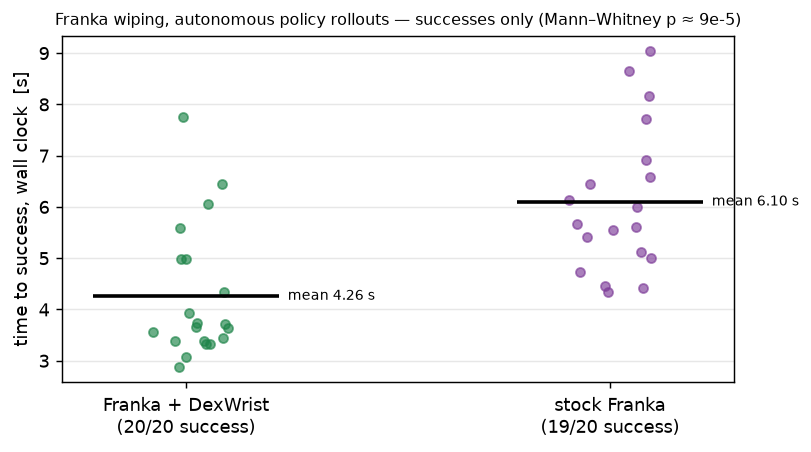

DexWrist vs. stock Franka FR3 under the same joint-impedance control
The UR3e wiping result leaves a possible confound: its baseline runs under an admittance loop, so poor performance could reflect the controller rather than the hardware. This experiment removes that confound by running both conditions on a torque-controlled Franka FR3 under the same joint-impedance control, with joint-space observations and actions in both. With success saturated for both conditions (20/20 vs 19/20), DexWrist completes the task 1.43× faster. A good controller makes the stock arm succeed; the speed gap that remains under matched control is the hardware's contribution.
Both conditions run Franka joint impedance at 30 Hz with 7-D joint-position observations and actions, and both collect demonstrations by GELLO leader–follower teleoperation. The baseline keeps all seven Franka joints live. In the DexWrist condition, the two Franka wrist joints that DexWrist replaces are locked and the wrist supplies those DOFs instead, so both conditions have seven contributing actuated DOFs; leaving those joints live would place two wrist stages in series, whose output speeds sum.
Success is at least 50% of the scribble erased within the 300-step (10 s) horizon, judged by the operator at trial end. Each condition is evaluated at the final checkpoint of its training run.
One diffusion policy per condition, trained on that condition's demonstrations, with prediction horizon, conditioning steps, executed actions per inference, and control rate identical across the two.
| Metric | Franka + DexWrist | Stock Franka |
|---|---|---|
| Success | 20/20 | 19/20 |
| Time to success, wall clock | 4.26 ± 1.27 s | 6.10 ± 1.39 s |
| Time to success, control ticks | 3.18 ± 0.98 s | 4.64 ± 1.11 s |
| Faults / e-stops / crashes | 0 | 0 |
Time to success differs at Mann–Whitney p ≈ 9×10−5. The gap (∼30% shorter, i.e. 1.43× faster) is essentially unchanged in control-tick time (1.46×), and the two conditions' inference stall ratios are nearly equal (1.34 vs 1.32), so it is not an inference-latency artifact. The single baseline failure ran the full 10 s horizon.

Time to success, all successful rollouts; horizontal bars are condition means. With success saturated for both conditions, completion time is the informative metric.
The same effort measurements as the paper's user study were recorded while collecting the training demonstrations for both conditions. Operator time is the whole per-demo window including resets and failed attempts; task duration is the successful attempt alone; resets are discards plus robot faults.
| Metric | Stock Franka | Franka + DexWrist |
|---|---|---|
| Demonstrations collected | ≈100 per condition | |
| Task duration (mean ± SEM) | 6.60 ± 0.22 s | 5.30 ± 0.17 s |
| Operator time per demo (mean) | 24.2 s | 22.4 s |
| Resets per demo (total) | 0.200 (13, of which 12 robot faults) | 0.010 (1, of which 1 robot fault) |
The reset counts are informative on their own: under the same controller, operator, and task, the stock Franka faulted 12 times during collection versus once with DexWrist.
Success is controller-sensitive: under a high-quality joint-impedance controller, even the stiff harmonic-drive arm succeeds at the task. Completion time behaves differently. With the controller, action space, policy architecture, and inference configuration all matched, the low-impedance QDD wrist still completes the task 1.43× faster and required 12× fewer robot faults during demonstration collection. Together with the UR3e result, the two arms bracket the hardware spectrum: on a force-poor arm DexWrist changes whether the task succeeds; on a force-rich arm it changes how fast and how reliably.
Companion to the Wiping Experiments section of the paper. See also the UR3e controller study and the project page.